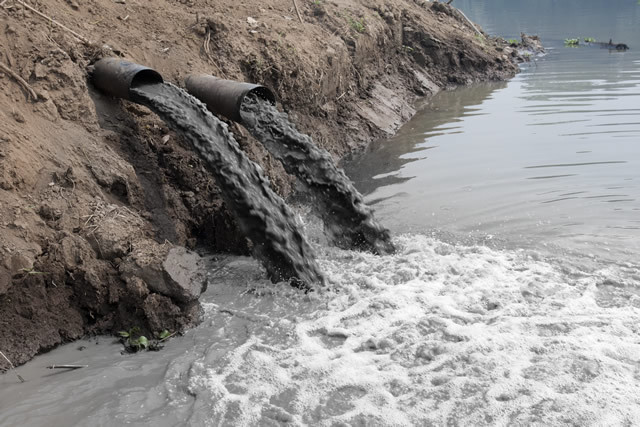

工場からの排水には多くの有害物質が含まれており、汚染源となります。
半導体工場から排出される有害物質として、以下の３つを挙げます。
フッ化水素
日本では、世界3位のシェアを誇るものとして、半導体が挙げられます。この半導体を工場で製造するときに排出されるのは、環境に悪影響を与えると考えられる有害物質です。
半導体工場の排水に含まれる化学物質のうち、最も多く含まれていると考えられているのは、フッ化水素です。
フッ化水素は、人体に悪影響を及ぼすと考えられていて、その症状として喉・鼻・口などの刺激症状から死に至ることもあるといいます。
このような物質が水中に排水されるとすると、海洋にも影響を及ぼしかねません。
カドミウム
カドミウムに汚染された粉塵を吸い込むと、短期間で気道や腎臓に問題を生じ、多くは 腎不全 により死の危険を招きます。
土壌中では、陽イオンの形のときは粘土等に吸着されるが、わずかなCl⁻の存在で海水中と同様に中性または陰電荷をもつ錯イオンとなり、粘土から離れていくという特性を持ちます。
その性質は、亜鉛よりはるかに強いです。
亜鉛
人為的な汚染源としては、メッキ工場、医薬品製造工場からの排水が挙げられます。
カドミウムと同様に、塩素イオン錯体を作りやすいです。
工業排水による海洋汚染の対策
排出水に水質基準を定める
排出水に水質基準を定める
| 有害物質の種類 |
許容限度 |
| カドミウム及びその化合物 |
0.03mg Cd/L |
| シアン化合物 |
1 mg CN/L |
| 有機燐化合物（パラチオン、メチルパラチオン、メチルジメトン及び EPNに限る。） |
1mg/L |
| 鉛及びその化合物 |
0.1 mg Pb/L |
| 六価クロム化合物 |
0.5 mg Cr(VI)/L |
| 砒素及びその化合物 |
0.1 mg As/L |
| 水銀及びアルキル水銀その他の水銀化合物 |
0.005 mg Hg/L |
| アルキル水銀化合物 |
検出されないこと。 |
| ポリ塩化ビフェニル |
0.003mg/L |
| トリクロロエチレン |
0.1mg/L |
| テトラクロロエチレン |
0.1mg/L |
| ジクロロメタン |
0.2mg/L |
| 四塩化炭素 |
0.02mg/L |
| 1,2-ジクロロエタン |
0.04mg/L |
| 1,1-ジクロロエチレン |
1mg/L |
| シス-1,2-ジクロロエチレン |
0.4mg/L |
| 1,1,1-トリクロロエタン |
3mg/L |
| 1,1,2-トリクロロエタン |
0.06mg/L |
| 1,3-ジクロロプロペン |
0.02mg/L |
| チウラム |
0.06mg/L |
| シマジン |
0.03mg/L |
| チオベンカルブ |
0.2mg/L |
| ベンゼン |
0.1mg/L |
| セレン及びその化合物 |
0.1 mg Se/L |
| ほう素及びその化合物 |
海域以外の公共用水域に排出されるもの： |
10 mg B/L |
| 海域に排出されるもの： |
230 mg B/L |
| ふっ素及びその化合物 |
海域以外の公共用水域に排出されるもの： |
8 mg F/L |
| 海域に排出されるもの： |
15 mg F/L |
アンモニア、アンモニウム化合物、
亜硝酸化合物及び硝酸化合物 |
アンモニア性窒素に0.4を乗じたもの、
亜硝酸性窒素及び硝酸性窒素の合計量： |
100mg/L |
| 1,4-ジオキサン |
0.5mg/L |
重金属の処理方法
先ほど取り上げたカドミウムや亜鉛は重金属と呼ばれます。
重金属は一般にアルカリ沈殿法、共沈法、硫化物法などの凝集沈殿法で処理されますが、そのほかにイオン交換樹脂法、膜分離法、酸化還元法、電気分解法などの処理法があります。
まとめ
工業排水として、フッ化水素、カドミウム、亜鉛を取り上げましたが、そのほかにも工業から排水に含まれる有害物質の種類は多いです。
現在、工業排水による海洋汚染の対策として、環境省では排出水に水質基準を定めるなどしています。